1. บทบาทและสิทธิ์
เข้าใช้งานที่ https://172.16.46.130 ด้วยรหัสประจำตัวบุคลากรหรืออีเมล บัญชีเจ้าหน้าที่มี 2 ระดับ
แต่ละระดับทำงานได้ต่างกันตามตารางนี้
| งาน | ผู้ดูแลคลัง | ผู้ดูแลระบบสูงสุด |
|---|
| อนุมัติคำขอ จ่ายของ รับคืน อนุมัติต่อเวลา และเปลี่ยนตัวอุปกรณ์ | ✔ | ✔ |
| จัดการอุปกรณ์ ตรวจครุภัณฑ์ นำเข้าไฟล์ทะเบียน และจัดชุดอุปกรณ์ | ✔ | ✔ |
| อนุมัติผู้สมัคร สร้างบัญชี และเปิดหรือปิดบัญชีผู้ใช้ | ✔ | ✔ |
| แก้ยอดค่าปรับ และบันทึกรับชำระ | ✔ | ✔ |
| ยกเว้นค่าปรับ | ได้เฉพาะยอดที่ไม่เกินเพดานในหน้าตั้งค่า | ✔ |
| แก้ราคา วันที่ได้มา ค่าเสื่อม ป้ายอัตราค่าปรับ และค่าตั้งค่าเรื่องค่าปรับ | ไม่ได้ | ✔ |
| ลบบัญชี เปลี่ยนระดับสิทธิ์ ซ่อนประวัติการยืม และเปิดหน้าตรวจสอบระบบ | ไม่ได้ | ✔ |
งานที่ทำได้เฉพาะผู้ดูแลระบบสูงสุดอยู่ใน คู่มือผู้ดูแลระบบสูงสุด แยกอีกเล่ม
ทุกการกระทำของเจ้าหน้าที่ถูกบันทึกไว้ในหน้า ประวัติการใช้งาน ว่าใครทำอะไรเมื่อไร
และไม่มีใครแก้หรือลบบันทึกนี้ได้
2. Dashboard
หน้าแรกหลังเข้าสู่ระบบ สรุปงานที่ต้องทำในวันนี้ ได้แก่ คำขอที่รออนุมัติ ของที่นัดคืน และรายการที่เลยวันคืน
นอกจากนี้มีจำนวนอุปกรณ์แยกประเภท มูลค่าของที่ถูกยืมออก จำนวนผู้ใช้แยกตามชั้นปี และอุปกรณ์ที่ถึงรอบตรวจสภาพ
กดที่การ์ดใดก็ได้เพื่อไปยังหน้าที่เกี่ยวข้อง แถบด้านบนมีปุ่มคู่มือ (รูปหนังสือ) และ "มีอะไรใหม่" (รูปเอกสาร)
ซึ่งสรุปสิ่งที่เปลี่ยนหลังอัปเดตระบบ
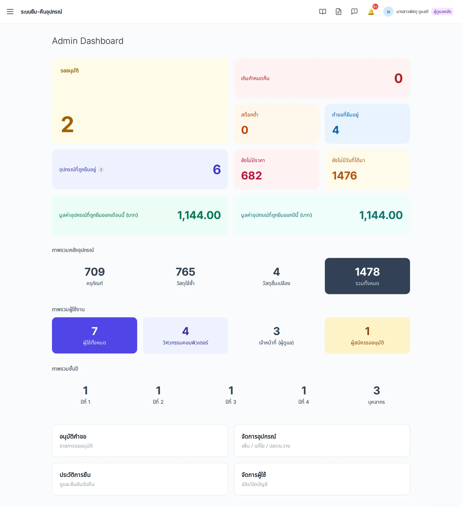
Dashboard ของเจ้าหน้าที่3. อนุมัติคำขอ และลงชื่อผู้อนุมัติ
เมนู อนุมัติคำขอ รวมงานที่รอเจ้าหน้าที่ไว้ 3 คิว คือ คำขอยืมที่รออนุมัติ ผู้ยืมที่แจ้งนัดคืน
(เรียงตามเวลานัดที่ใกล้ที่สุด) และคำขอต่อเวลาที่รอพิจารณา
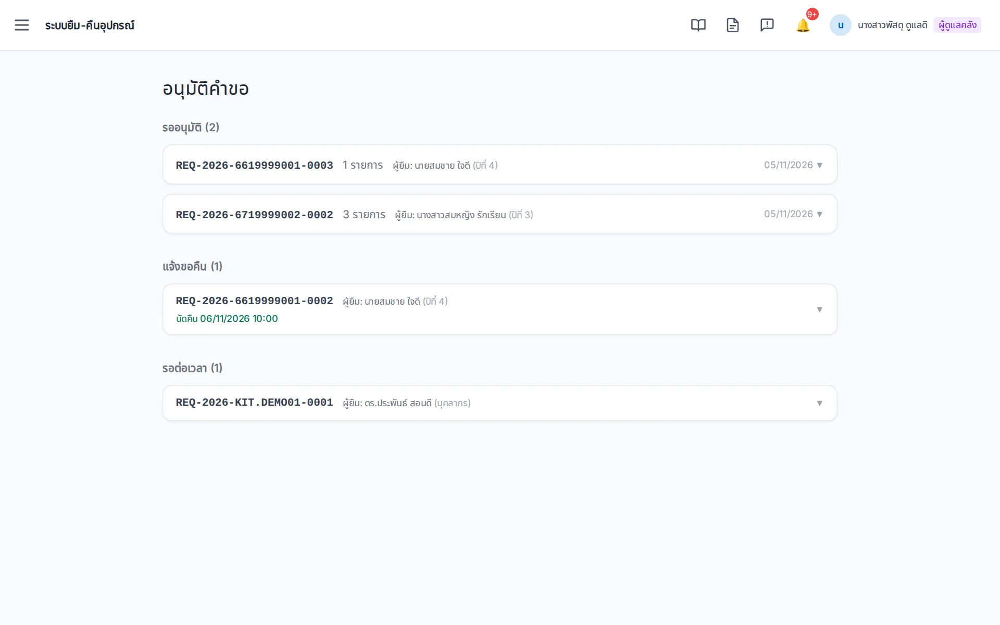
หน้าอนุมัติคำขอ แบ่งเป็น 3 คิว- กดที่คำขอเพื่อเปิด ตรวจรายการอุปกรณ์ วัตถุประสงค์ และวันคืนที่ผู้ยืมขอ
- ถ้าอนุมัติทั้งใบ กด อนุมัติ
- ถ้าอนุมัติได้เพียงบางชิ้น เอาติ๊กออกจากชิ้นที่ไม่อนุมัติ แล้วพิมพ์เหตุผลในช่องที่ขึ้นมา (ต้องมีเหตุผลทุกครั้ง
ผู้ยืมจะเห็นเหตุผลนี้) ปุ่มจะเปลี่ยนเป็น "อนุมัติเฉพาะที่ติ๊กไว้"
- หน้าต่าง นัดรับของ จะขึ้นมา โดยกรอกวัน เวลา และสถานที่ค่าเริ่มต้นไว้ให้ แก้ได้ตามต้องการ
ถ้าผู้ยืมรออยู่หน้าเคาน์เตอร์และจะจ่ายของทันที กด ไม่นัด เพื่อล้างช่องนัด
- ใส่รหัสผ่านของคุณในช่อง รหัสผ่านของคุณ (ลงชื่อผู้อนุมัติในใบยืม) ช่องนี้ต้องกรอกทุกครั้ง
- กด ยืนยันอนุมัติ ระบบจะตัดสต็อกชิ้นที่อนุมัติ และแจ้งเตือนผู้ยืมพร้อมรายละเอียดนัดรับ
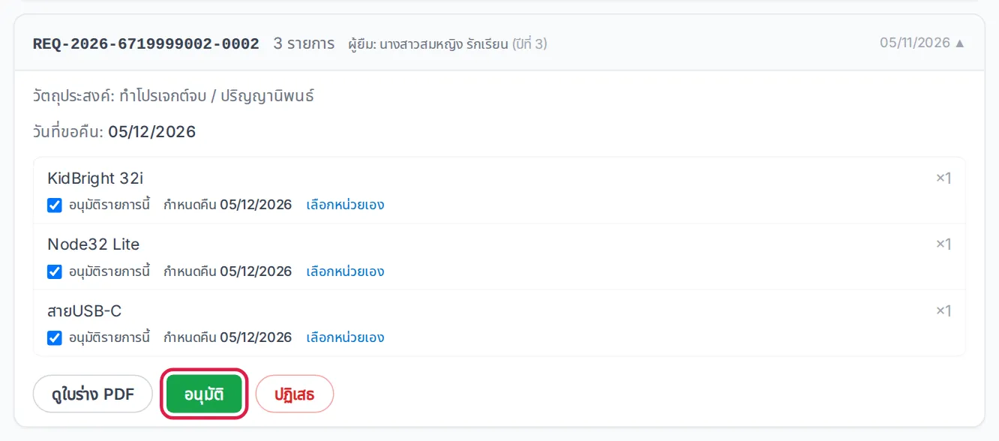
เปิดคำขอที่รออนุมัติ กรอบแดงคือปุ่มอนุมัติทั้งใบ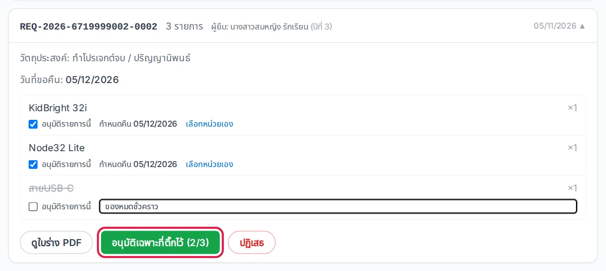
เอาติ๊กออกจากชิ้นที่ไม่อนุมัติ และพิมพ์เหตุผล ปุ่มจะเปลี่ยนเป็นอนุมัติเฉพาะที่ติ๊กไว้
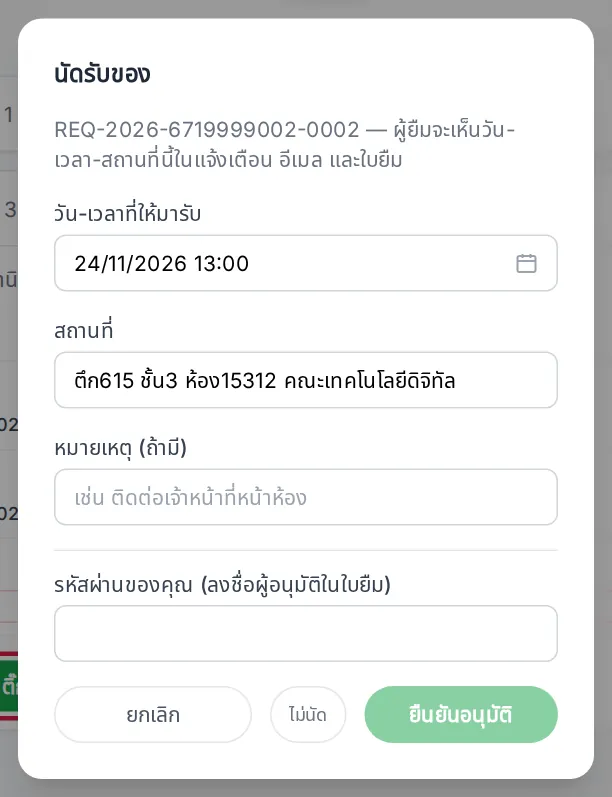
หน้าต่างนัดรับของ และช่องรหัสผ่านสำหรับลงชื่อผู้อนุมัติ
ถ้าวันคืนที่ผู้ยืมขอผ่านไปแล้วระหว่างที่คำขอรออนุมัติ แถวนั้นจะขึ้นป้ายแดงพร้อมปุ่ม แก้วันคืน
ต้องแก้เป็นวันในอนาคตก่อนจึงอนุมัติได้ เมื่อแก้วันคืน ลายมือชื่อเดิมของผู้ยืมจะถูกพักไว้ และระบบจะแจ้งให้ผู้ยืมลงชื่อใหม่
ถ้าจะไม่อนุมัติทั้งใบ กด ปฏิเสธ แล้วเลือกหรือพิมพ์เหตุผล
4. จ่ายของ
ผู้ยืมส่วนใหญ่ลงชื่อใบยืมมาตั้งแต่ตอนยื่นคำขอ เจ้าหน้าที่จึงแค่บันทึกว่าจ่ายของแล้ว
- ไปที่เมนู ประวัติการยืม หาคำขอด้วยชื่อ รหัสนักศึกษา หรือเลขคำขอ หรือกด สแกนรับคืน
เพื่อสแกน QR บนตัวอุปกรณ์ แล้วเปิดคำขอ
- ถ้าผู้ยืมลงชื่อแล้ว จะเห็นปุ่ม บันทึกจ่ายของ กดแล้วส่งของได้เลย
- ถ้าผู้ยืมยังไม่ได้ลงชื่อ จะเห็นปุ่ม จ่ายของ + ลงชื่อใบยืม กดแล้วยื่นจอให้ผู้ยืมพิมพ์รหัสผ่านของตัวเองในช่อง
"รหัสผ่านผู้ยืม" ช่องรหัสผ่านเจ้าหน้าที่จะเว้นไว้ก็ได้ แล้วกด ลงนามและบันทึกการจ่ายของ
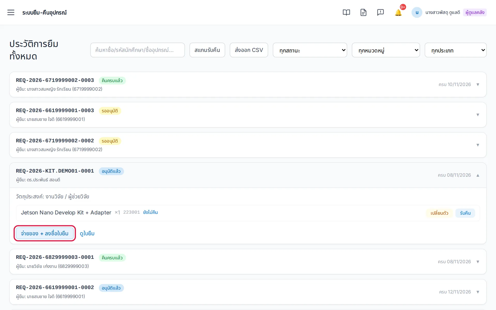
ปุ่มจ่ายของ + ลงชื่อใบยืม ในการ์ดคำขอ (กรอบแดง)
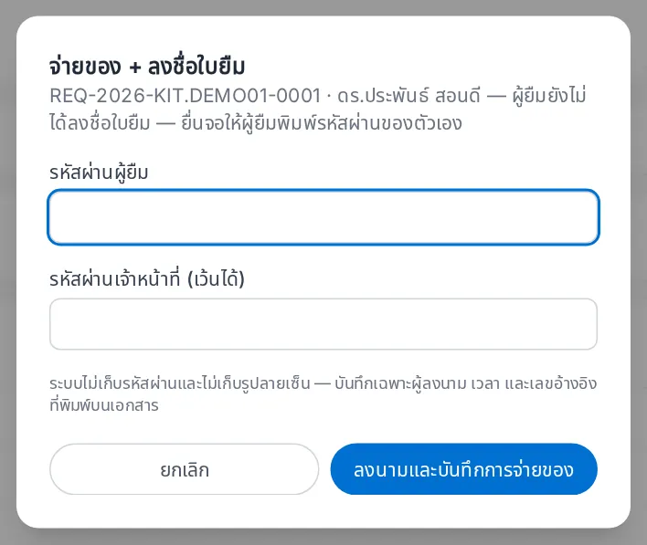
ผู้ยืมพิมพ์รหัสผ่านของตัวเองเพื่อลงชื่อรับของ
ระบบไม่เก็บรหัสผ่านและไม่เก็บรูปลายเซ็น บันทึกเฉพาะผู้ลงนาม เวลา และเลขอ้างอิงที่พิมพ์บนเอกสาร
ลงชื่อได้ครั้งเดียวต่อเอกสาร ถ้าผิดต้องให้ผู้ดูแลระบบแก้ให้ การจ่ายของไม่ตัดสต็อกเพิ่ม เพราะตัดไปแล้วตั้งแต่อนุมัติ
5. รับคืน และเปลี่ยนตัว
เมื่อผู้ยืมนำของมาคืน ตรวจสภาพของก่อน แล้วบันทึกรับคืนทีละชิ้น
- เปิดคำขอในหน้า ประวัติการยืม หรือจากคิวแจ้งขอคืนในหน้าอนุมัติคำขอ กด รับคืน ที่แถวของชิ้นนั้น
- เลือกสภาพตามจริง ครุภัณฑ์และวัสดุใช้ซ้ำมี ปกติ เสียหาย และสูญหาย ส่วนวัสดุสิ้นเปลืองมี คืนครบ ใช้หมด
และเสียต้องทิ้ง เฉพาะสภาพ "ปกติ" และ "คืนครบ" เท่านั้นที่ของจะกลับเข้าสต็อก
- ถ้าสภาพเสียหาย สูญหาย หรือต้องทิ้ง ต้องแนบรูปหลักฐานอย่างน้อย 1 รูป ระบบจะแสดงค่าปรับล่าช้าและค่าเสียหายที่คิดให้
ถ้าตกลงกับผู้ยืมเป็นยอดอื่น แก้ตัวเลขได้ก่อนกดยืนยัน
- ถ้าของคืนมาไม่ครบหรือสภาพไม่เหมือนกัน ใส่จำนวนที่คืนในรอบนั้น ส่วนที่เหลือยังค้างอยู่ในรายการเดิม
เช่น ยืม 10 ชิ้น ดี 7 ชิ้น เสีย 2 ชิ้น ให้กดรับคืน 2 รอบ อีก 1 ชิ้นที่ยังไม่คืนจะค้างไว้
- ผู้ยืมลงชื่อใบคืนเองได้จากมือถือ ถ้าจะลงชื่อที่เคาน์เตอร์ กด ลงชื่อใบคืน ในการ์ดคำขอ
แล้วดาวน์โหลด ใบคืน เก็บไว้เป็นหลักฐานได้
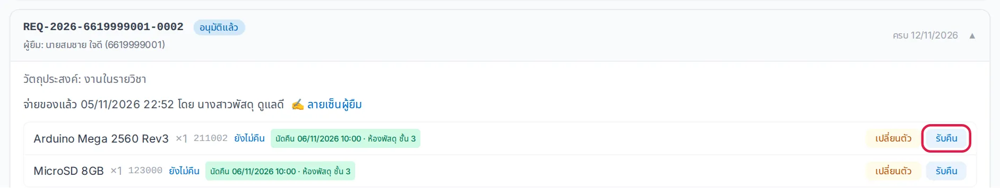
ปุ่มรับคืน (กรอบแดง) และปุ่มเปลี่ยนตัว อยู่ท้ายแถวของแต่ละชิ้น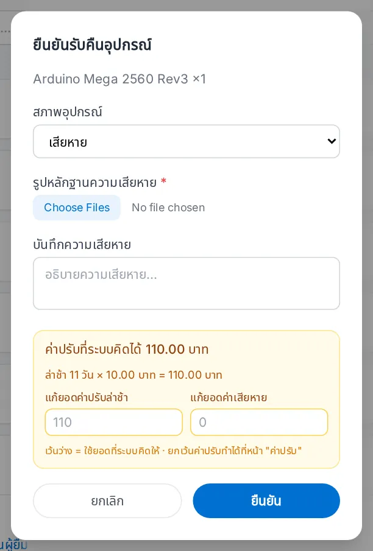
รับคืนสภาพเสียหาย ต้องแนบรูปหลักฐาน
เปลี่ยนตัวระหว่างยืม
ใช้เมื่อเครื่องเสียระหว่างที่ผู้ยืมใช้งานอยู่และต้องการเครื่องใหม่แทน กด เปลี่ยนตัว ที่แถวของเครื่องนั้น
เลือกสภาพของเครื่องเดิมที่รับคืน และพิมพ์เหตุผล ระบบจะเลือกเครื่องใหม่ให้หรือจะเลือกเองก็ได้
เครื่องใหม่ใช้วันคืนและอัตราค่าปรับเดิม ถ้ามีค่าปรับล่าช้า ระบบจะคิดครั้งเดียวตอนคืนเครื่องใหม่
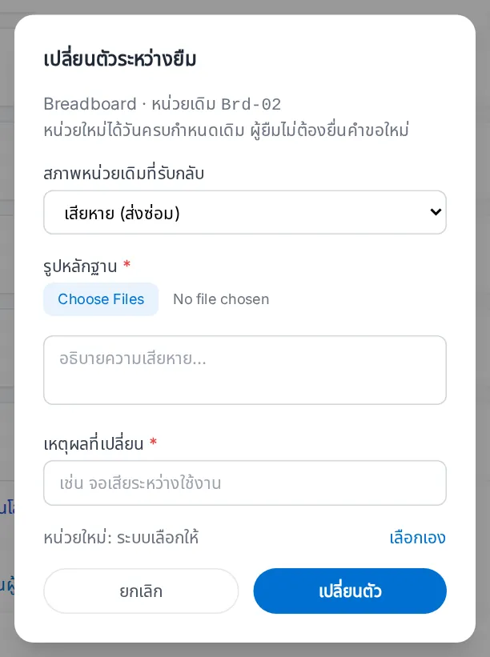
หน้าต่างเปลี่ยนตัวระหว่างยืมคำขอต่อเวลา
อยู่ในคิว "รอต่อเวลา" ของหน้าอนุมัติคำขอ ดูวันที่ผู้ยืมขอและเหตุผล แล้วกด อนุมัติ หรือ ปฏิเสธ
ถ้าปฏิเสธ จะไม่นับเป็นครั้งที่ผู้ยืมใช้สิทธิ์ต่อเวลา
6. ค่าปรับ
ระบบคิดค่าปรับให้อัตโนมัติตอนรับคืน อัตราค่าปรับล่าช้ามาจากป้ายอัตราของอุปกรณ์รุ่นนั้น ณ วันที่อนุมัติ
และยอดจะถูกเก็บไว้ตามวันที่รับคืน ถ้าภายหลังมีการเปลี่ยนอัตรา ยอดของรายการเก่าจะไม่เปลี่ยนตาม
เมนู ค่าปรับ แยกรายการเป็นค้างชำระ ชำระแล้ว และยกเว้น
- แก้ยอด ใช้เมื่อตกลงกับผู้ยืมเป็นยอดอื่น ต้องพิมพ์เหตุผลทุกครั้ง แก้เป็น 0 ไม่ได้ ถ้าจะไม่เก็บเงินให้ใช้การยกเว้นแทน
- รับชำระ เมื่อผู้ยืมจ่ายเงินแล้ว ระบบจะให้ยืนยันยอดอีกครั้งก่อนบันทึก
- ยกเว้นค่าปรับ ผู้ดูแลคลังยกเว้นได้เฉพาะยอดที่ไม่เกินเพดานที่ตั้งไว้ในหน้าตั้งค่า ยอดที่เกินต้องให้ผู้ดูแลระบบสูงสุดทำ
- เจ้าหน้าที่จัดการค่าปรับของคำขอที่ตัวเองเป็นผู้ยืมไม่ได้ ต้องให้เจ้าหน้าที่คนอื่นทำ
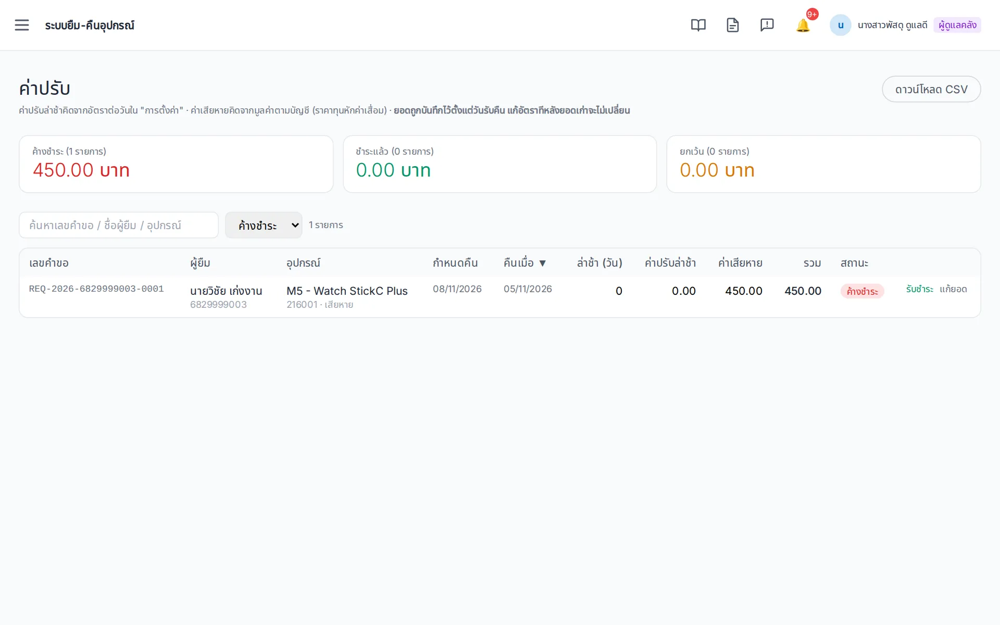
หน้าค่าปรับ
ผู้ใช้ที่มีค่าปรับค้างชำระรวมตั้งแต่ 200 บาท จะยื่นคำขอยืมใหม่ไม่ได้ จนกว่าจะชำระหรือได้รับการยกเว้น
7. จัดการอุปกรณ์
เมนู จัดการอุปกรณ์ แสดงอุปกรณ์ทั้งคลัง จัดกลุ่มตามรุ่น (อุปกรณ์ชื่อเดียวกันถือเป็นรุ่นเดียวกัน)
กด "ดูรายหน่วย" เพื่อดูทีละชิ้น ช่องค้นหาค้นได้ทั้งชื่อ รุ่น หมายเลขเครื่อง (SN) รหัสอุปกรณ์ เลขครุภัณฑ์ และห้อง
และกรองเฉพาะของในห้องเดียวได้จากช่อง ทุกห้อง
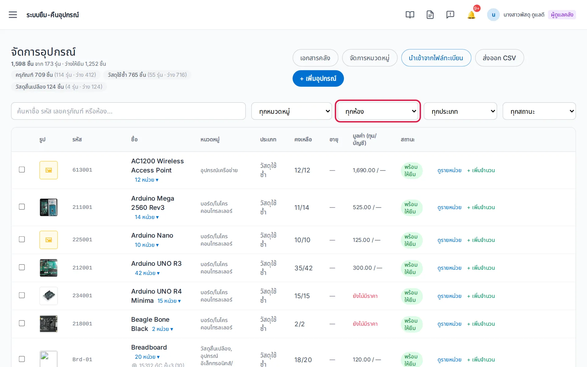
หน้าจัดการอุปกรณ์ กรอบแดงคือช่องกรองตามห้องเพิ่มอุปกรณ์ใหม่
- กด + เพิ่มอุปกรณ์
- แท็บ ข้อมูลประจำตัว กรอกชื่ออุปกรณ์ โดยตั้งแบบ "ประเภท + คุณสมบัติ + รุ่น" เช่น
เซ็นเซอร์อุณหภูมิและความชื้น DHT11 (ไม่ใช่แค่ DHT11) แล้วกรอกผู้ผลิต รุ่น และ SN แนบรูปอย่างน้อย 1 รูป
เลือกหมวดหมู่ ประเภท และจำนวน ช่องรหัสอุปกรณ์เว้นว่างได้ ระบบจะออกรหัสให้ (DT-D สำหรับครุภัณฑ์ DT-M วัสดุใช้ซ้ำ
DT-C วัสดุสิ้นเปลือง)
- ช่อง ห้อง ใส่เลขห้องอย่างเดียว เช่น 15312 ส่วนตู้หรือชั้นใส่ที่ช่อง ตำแหน่งในห้อง เช่น ตู้A ชั้น3
- แท็บ สถานะ & การใช้งาน เลือก อัตราค่าปรับคืนเกินกำหนด ของใหม่จะได้ป้ายค่าเริ่มต้นไว้ให้
- แท็บ ทะเบียน & การเงิน กรอกเลขครุภัณฑ์ (ถ้ามี พิมพ์ตัวเลข 15 หลักติดกันได้ ระบบใส่ขีดให้)
ราคาที่ซื้อ และวันที่ได้มา สองช่องหลังต้องกรอกทุกครั้ง
- กด บันทึก
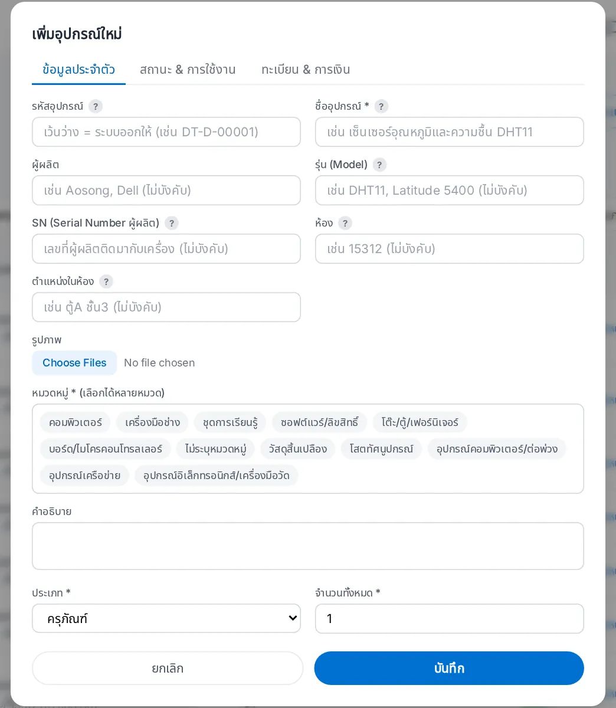
แท็บข้อมูลประจำตัว มีช่องห้องและตำแหน่งในห้องแยกกัน
ระบบถือว่าอุปกรณ์ที่ชื่อเหมือนกันเป็นรุ่นเดียวกัน ของต่างรุ่นจึงห้ามตั้งชื่อซ้ำ
เปลี่ยนอัตราค่าปรับที่ชิ้นใด ทุกชิ้นในรุ่นเดียวกันจะเปลี่ยนตาม ส่วนของที่ยืมอยู่ยังใช้อัตราเดิม
ย้ายของไปห้องใหม่ให้กรอกตำแหน่งใหม่ด้วย ถ้าเว้นไว้ ตำแหน่งเดิมจะถูกลบ
การเปลี่ยนสถานะอุปกรณ์ (เช่น ส่งซ่อม) ต้องพิมพ์เหตุผล และราคากับวันที่ได้มาของอุปกรณ์ที่บันทึกไปแล้ว
แก้ได้เฉพาะผู้ดูแลระบบสูงสุด
งานอื่นในหน้านี้
- + เพิ่มจำนวน เติมของเข้ารุ่นเดิม และ ปรับยอดคงเหลือ ใช้เมื่อนับของจริงแล้วไม่ตรงกับในระบบ
- QR พิมพ์ป้าย QR ไปติดที่ตัวอุปกรณ์ ประวัติ ดูว่าชิ้นนั้นเคยถูกใครยืมเมื่อไร
และ ปลดระวาง สำหรับของที่เลิกใช้แล้ว
- นำเข้าจากไฟล์ทะเบียน รับไฟล์ Excel, CSV หรือ PDF ดาวน์โหลดแม่แบบจากหน้าต่างนี้ กรอกข้อมูลตามแม่แบบ
แล้วอัปโหลด ระบบจะแสดงสิ่งที่จะเพิ่มหรือแก้ให้ตรวจก่อนกดยืนยัน
- ส่งออก CSV ดาวน์โหลดรายการอุปกรณ์ทั้งหมดแบบรายหน่วย และ เอกสารคลัง พิมพ์ใบสรุปสต็อกและใบขอซ่อม
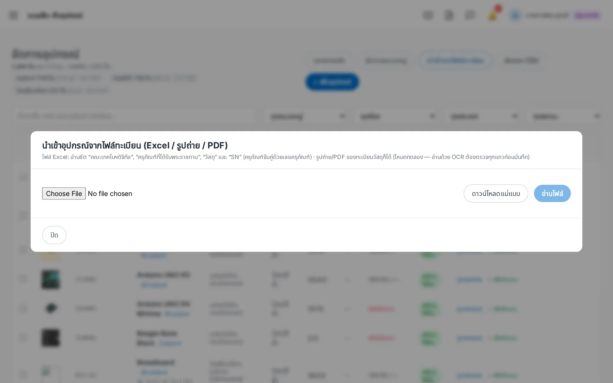
หน้าต่างนำเข้าจากไฟล์ทะเบียน
8. ตรวจครุภัณฑ์รายห้อง
เมนู ตรวจครุภัณฑ์ ใช้ตรวจว่าครุภัณฑ์อยู่ครบตามทะเบียนของแต่ละห้อง และบันทึกสภาพตามแบบ
"รายงานทะเบียนคุมทรัพย์สิน" ของคณะ ตรวจเฉพาะครุภัณฑ์ วัสดุไม่ต้องตรวจ
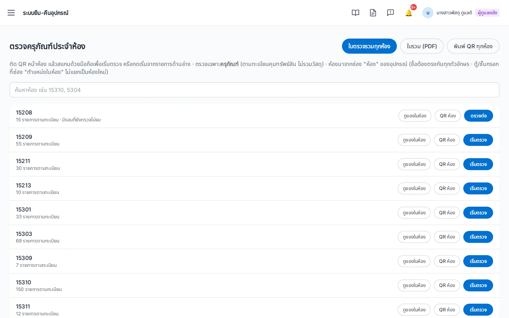
รายชื่อห้อง แต่ละห้องมีปุ่มดูของในห้อง QR ห้อง และเริ่มตรวจขั้นตอนตรวจหนึ่งห้อง
- กด ดูของในห้อง ถ้าอยากดูรายการคร่าว ๆ ก่อน ปุ่มนี้ไม่เปิดรอบตรวจ
- กด เริ่มตรวจ ที่ห้องนั้น หรือสแกน QR ที่ติดหน้าห้อง (พิมพ์ได้จากปุ่ม QR ห้อง)
หน้ากล้องจะเปิดขึ้นเอง ถ้าตรวจค้างไว้ ปุ่มจะเปลี่ยนเป็น ตรวจต่อ
- สแกน QR บนครุภัณฑ์ทีละชิ้น หรือพิมพ์รหัสอุปกรณ์ในช่องใต้กล้องแล้วกด ค้นหา
- สแกนเจอแล้วหน้าต่างให้เลือกสภาพจะขึ้นทันที เลือก ปกติ ชำรุด เสื่อมสภาพ สูญหาย หรือรายการผิดประเภท
ถ้าไม่ใช่ปกติต้องพิมพ์หมายเหตุ เลือกสภาพจากรายการทีหลังได้ด้วยปุ่ม เลือกสภาพ
- ตรวจเสร็จกด จบการตรวจ แล้ว ยืนยันปิดรอบ ของที่ไม่ได้สแกนจะถูกบันทึกว่ายังไม่พบ และช่องสภาพเว้นว่างไว้
- กด พิมพ์ใบตรวจครุภัณฑ์ (PDF) หรือ ดาวน์โหลด Excel เพื่อเก็บเป็นเอกสาร
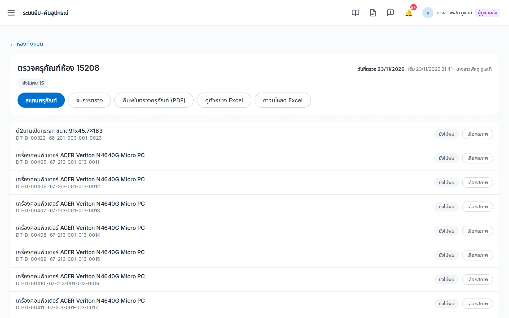
รายการในรอบตรวจ แต่ละชิ้นมีสถานะและปุ่มเลือกสภาพ
ถ้าสแกนเจอของที่ทะเบียนบอกว่าอยู่ห้องอื่น ระบบจะขึ้นป้ายสีส้มและย้ายทะเบียนมาห้องนี้ให้ทันที
ถ้าสแกนผิด กด ยกเลิกการสแกน ในหน้าต่างเลือกสภาพ ระบบจะย้ายกลับห้องเดิมให้
การเลือกสภาพบันทึกบนใบตรวจเท่านั้น ไม่เปลี่ยนสถานะของอุปกรณ์ในทะเบียน
ถ้าต้องการเอกสารรวมทุกห้อง กด ใบตรวจรวมทุกห้อง หรือ ใบรวม (PDF) ที่ด้านบนของหน้ารายชื่อห้อง
9. ชุดอุปกรณ์
เมนู ชุดอุปกรณ์ ใช้จัดของที่มักถูกยืมด้วยกันเป็นชุด เช่น บอร์ด สายไฟ และการ์ดหน่วยความจำ
ผู้ยืมกดเพิ่มทั้งชุดลงตะกร้าได้ในครั้งเดียว ถ้าของชิ้นใดในชุดหมด ระบบจะข้ามชิ้นนั้นและแจ้งผู้ยืมว่าไม่ได้เพิ่มชิ้นไหน
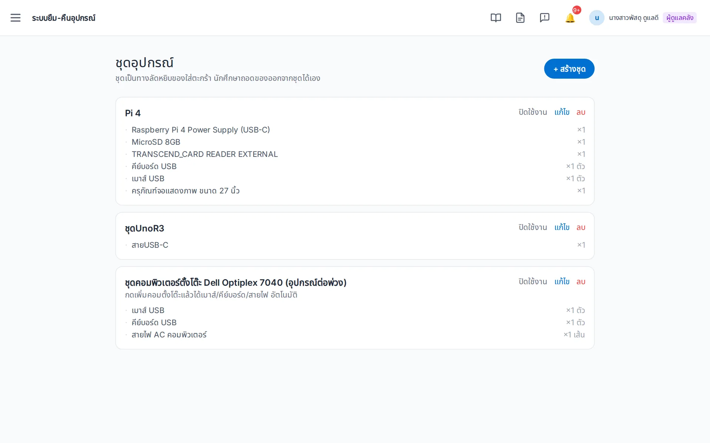
หน้าชุดอุปกรณ์10. จัดการผู้ใช้
- แถบสีเหลืองด้านบนแสดงผู้สมัครที่รออนุมัติ คือนักศึกษาที่ชื่อหรือรหัสไม่ตรงกับรายชื่อที่สาขาส่งมา
ตรวจว่าเป็นนักศึกษาของสาขาจริงแล้วกด อนุมัติ หรือ ปฏิเสธ ระหว่างที่ยังไม่อนุมัติ ผู้สมัครจะเข้าสู่ระบบไม่ได้
- + เพิ่มผู้ใช้ สร้างบัญชีให้นักศึกษา อาจารย์ หรือเจ้าหน้าที่
- ค้นหาด้วยชื่อ รหัส หรืออีเมล กรองรายชื่อตามระดับสิทธิ์หรือชั้นปีได้ แก้ชั้นปีของแต่ละคนได้ (ต้องพิมพ์เหตุผล)
และปิดหรือเปิดบัญชีได้
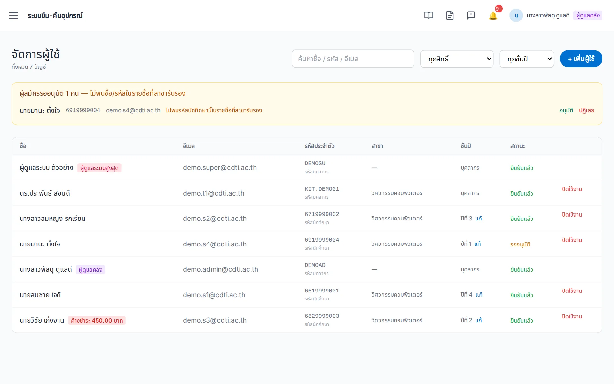
หน้าจัดการผู้ใช้
เพิ่มบัญชีอาจารย์ที่ยืมอุปกรณ์
อาจารย์สมัครเองไม่ได้ เจ้าหน้าที่ต้องสร้างบัญชีให้ บัญชีแบบนี้ยืมของได้อย่างเดียว ไม่มีสิทธิ์ของเจ้าหน้าที่
- กด + เพิ่มผู้ใช้ แล้วเลือก อาจารย์ (ยืมอย่างเดียว)
- กรอกชื่อ อีเมล รหัสผ่านเริ่มต้น และรหัสประจำตัว รหัสประจำตัวยาว 4 ถึง 20 ตัว ใช้ตัวอักษร ตัวเลข จุด ขีด
และขีดล่างได้ ต้องมีตัวอักษรอย่างน้อย 1 ตัว เช่น KIT.SA06
- กด สร้างบัญชี แล้วแจ้งรหัสประจำตัวและรหัสผ่านเริ่มต้นให้อาจารย์ และแนะนำให้เปลี่ยนรหัสผ่านเอง
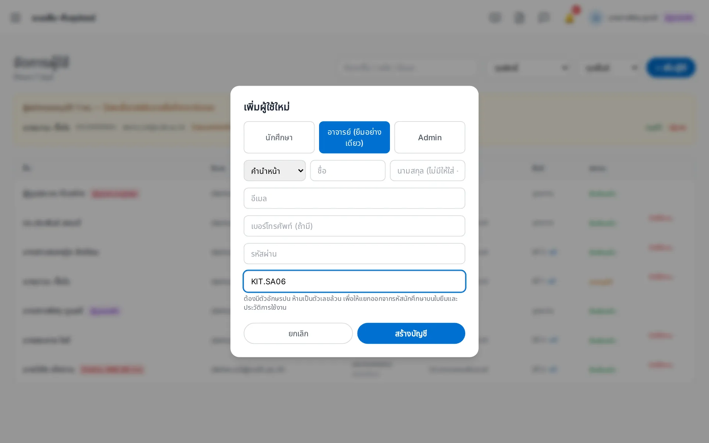
เพิ่มบัญชีอาจารย์
11. รายชื่อนักศึกษาที่สาขารับรอง
หน้านี้ใช้นำเข้าไฟล์ "รายชื่อนักศึกษาในที่ปรึกษา" จากสำนักทะเบียน (ไฟล์ .xls .xlsx .csv หรือ .pdf)
ทีละไฟล์ต่ออาจารย์ที่ปรึกษา นำเข้าไฟล์ซ้ำได้ ระบบจะอัปเดตข้อมูลรายคน และไม่ลบรายชื่อที่นำเข้าจากไฟล์ของอาจารย์ท่านอื่น
นักศึกษาที่ชื่อและรหัสตรงกับรายชื่อในหน้านี้ สมัครแล้วใช้งานได้ทันทีโดยไม่ต้องรออนุมัติ
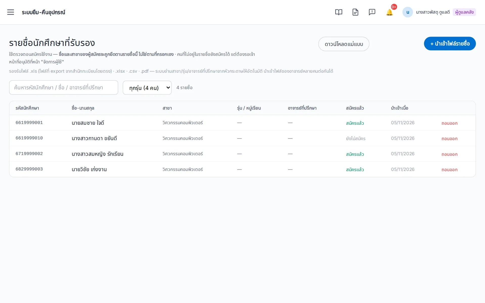
หน้ารายชื่อนักศึกษาที่สาขารับรอง12. การตั้งค่า
หน้านี้กำหนดค่าที่ใช้ทั้งระบบ เช่น สถานที่และเวลานัดรับของค่าเริ่มต้น จำนวนรายการสูงสุดต่อคำขอ
จำนวนวันที่ขอต่อเวลาได้ และจะให้ผู้ใช้ทั่วไปเห็นชื่อผู้ที่กำลังยืมอุปกรณ์หรือไม่
ช่องที่เป็นสีเทาแก้ได้เฉพาะผู้ดูแลระบบสูงสุด ได้แก่ ค่าปรับ ค่าเสื่อม ค่าที่ใช้ในเอกสาร และป้ายอัตราค่าปรับ
ถ้าต้องการเปลี่ยนค่าเหล่านี้ ให้ยื่นที่เมนู คำขอแก้ไขข้อมูล
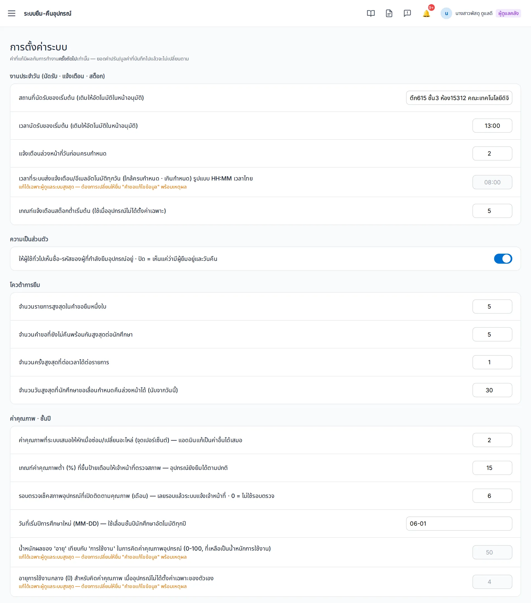
หน้าการตั้งค่า13. ประวัติการใช้งาน และสถิติ
เมนู ประวัติการใช้งาน บันทึกทุกการกระทำในระบบเป็นประโยคภาษาไทย เช่น ใครอนุมัติคำขอไหน เมื่อไร
กรองได้ตามผู้ทำ ประเภทการกระทำ และช่วงวันที่ และดาวน์โหลดเป็นไฟล์ CSV ได้
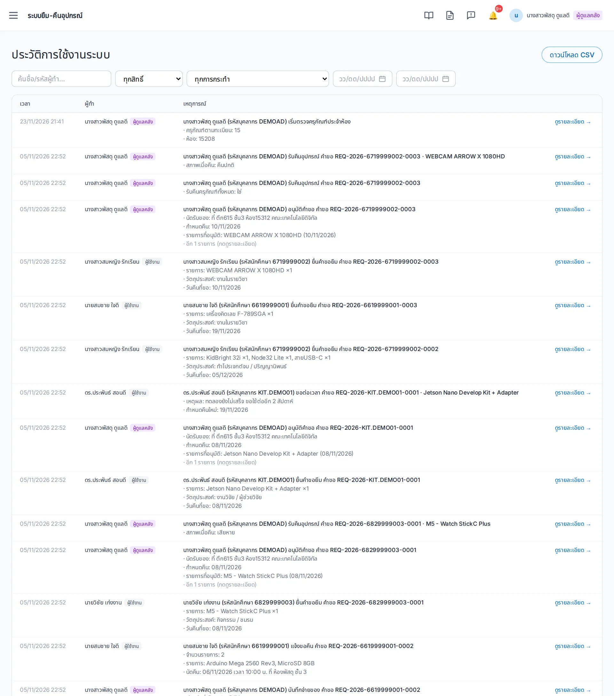
หน้าประวัติการใช้งานเมนู สถิติความคุ้มค่า แสดงว่าอุปกรณ์แต่ละรุ่นถูกยืมบ่อยแค่ไหน และต้นทุนต่อวันที่ถูกใช้งานเท่าไร
เลือกช่วงเวลาที่ต้องการดูได้ ใช้ประกอบการตัดสินใจจัดซื้อ
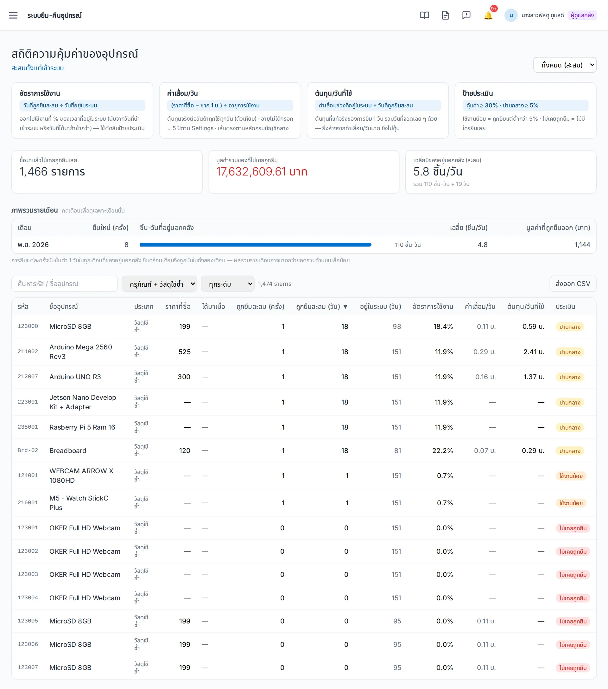
หน้าสถิติความคุ้มค่า14. คำขอแก้ไขข้อมูล
งานที่ผู้ดูแลคลังทำเองไม่ได้ เช่น แก้ราคาอุปกรณ์ หรือเปลี่ยนอัตราของป้ายค่าปรับ ให้ยื่นที่เมนู
คำขอแก้ไขข้อมูล พร้อมเหตุผล ผู้ดูแลระบบสูงสุดจะเข้าไปแก้ให้ แล้วกดปิดงานพร้อมบันทึกผล
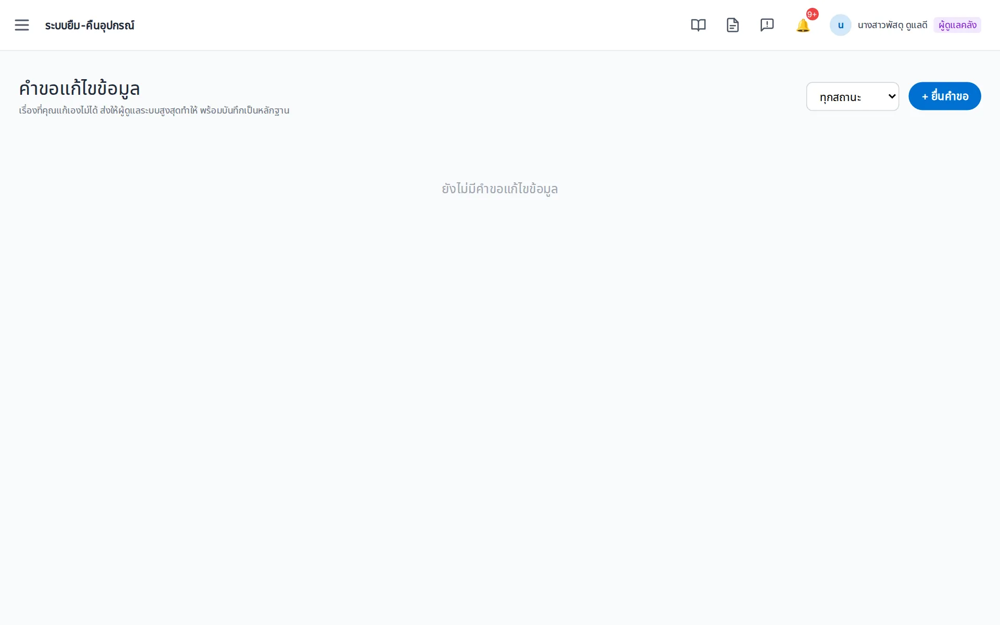
หน้าคำขอแก้ไขข้อมูล